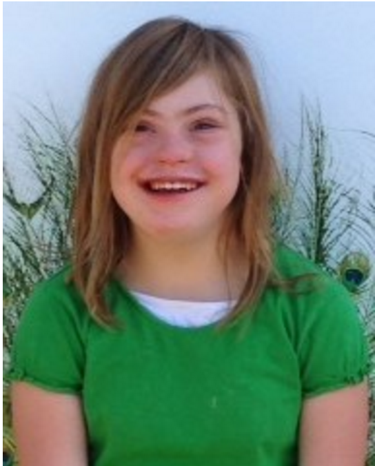
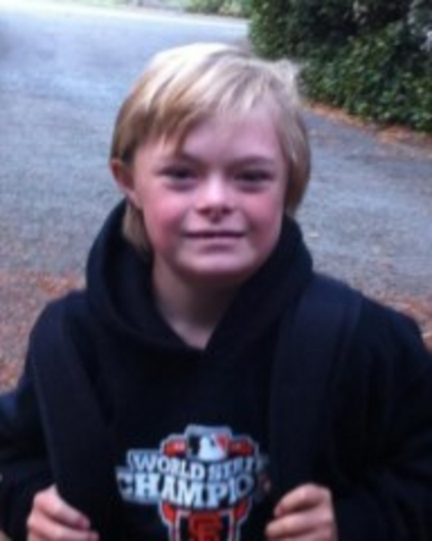

Our Story
Sign Me A Story is an innovative app series developed by GraceSigns, founded by Valerie R. Carter. GraceSigns is a non-profit organization with a mission of making language FUN and EASY for ALL kids.
The inspiration stemmed from Valerie's daughter Grace who has Down Syndrome. As a young child, Grace could not express herself. She had great difficulty and would often come home from school, unable to talk about her day. Valerie and Grace were both equally frustrated by their lack of language, so together they began to learn sign language. Finally they were able communicate! GraceSigns has a very simple goal - to give kids of all ages and abilities, the gift of language.
Our Signing Stars
Grace is a very active and happy young lady. She blogs for Positive Exposure's international PEARL program. She loves to swim, sing and horseback ride. She was recognized as a noteworthy advocate for Down syndrome and a 2014 recipient of a RISE award.
Our Signing Stars
Tyler is a lover! He loves life and he loves his family. Tyler is an amazing 'signer' and uses it to communicate almost all of his needs and wants. Tyler is an excellent swimmer but his favorite past-time is playing and wrestling with his two brothers and dog Scooby Doo.
Support Us
As non-profit organization 501(c)(3) GraceSigns will continue to create free and affordable apps for the differently-abled learning population of today. All donations are completely tax-deductible. Your donation supports language development for children and gives them the ability to communicate. Please donate through the PayPal link below: